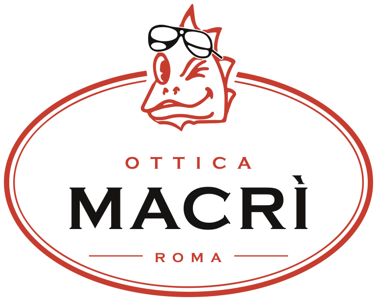
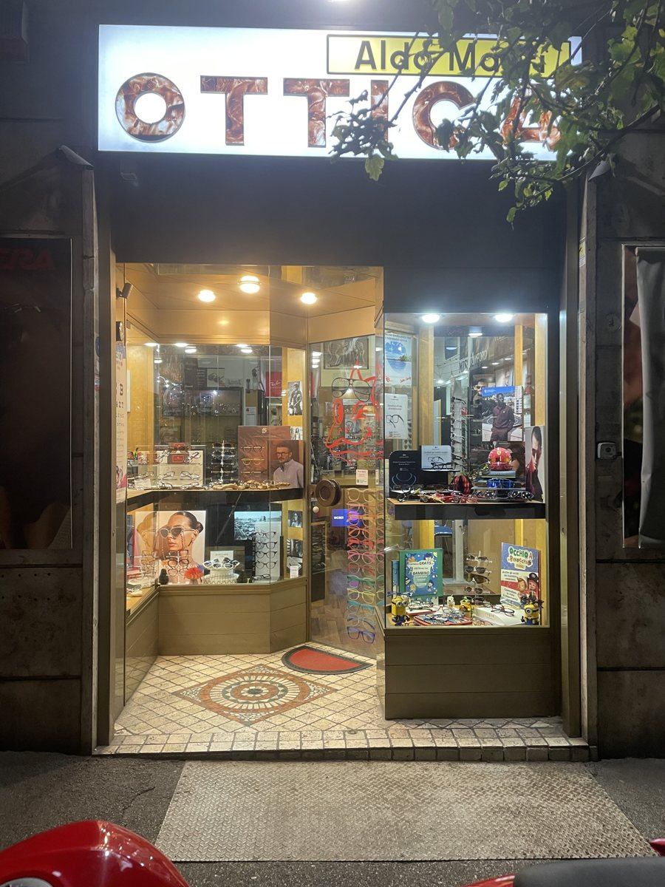
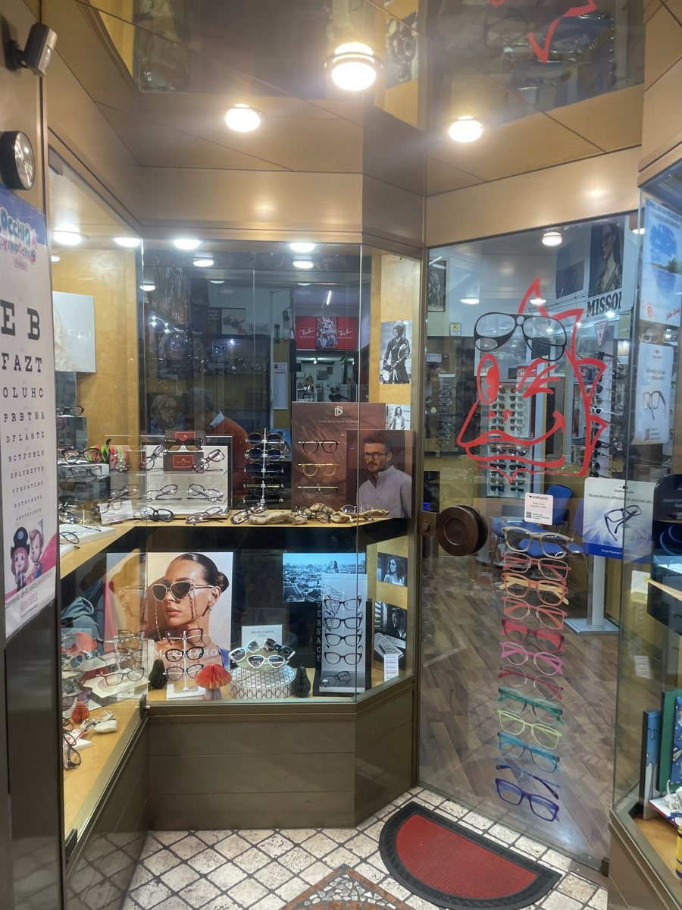
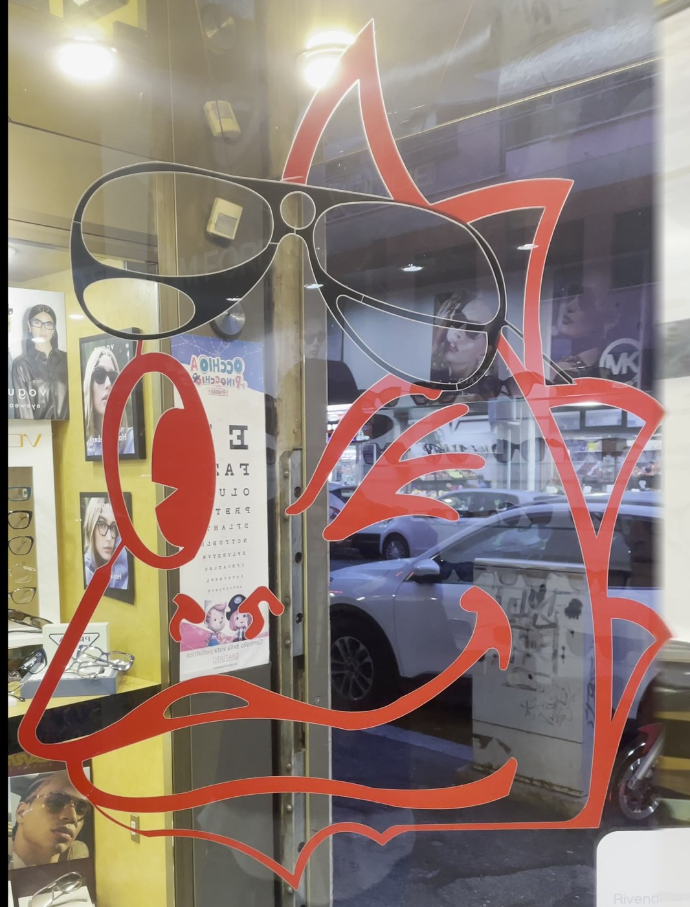
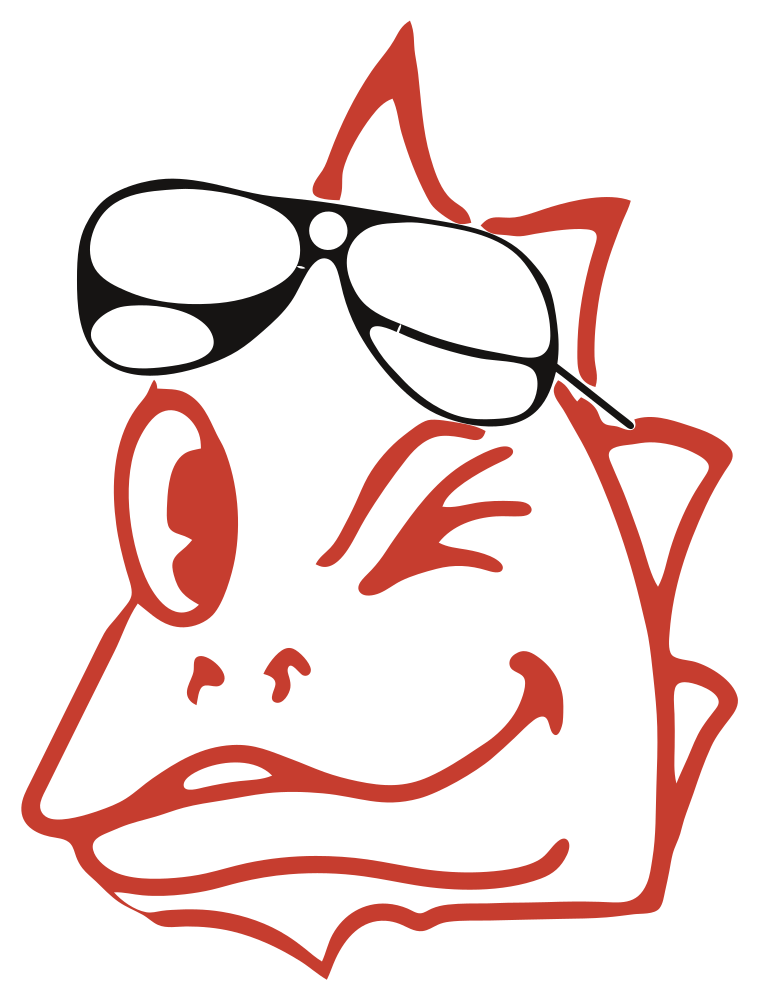

Restauro e Rebranding

Insegna, vetrofania, biglietti, carta, cartelli, app e social con la coppia che hai scelto.
Il marchio al lavoro
tel. 06 78346705 · P.IVA 08516310581
Sono prove di come starebbe: misure, scritte e materiali si decidono con Fabrice. Testi e prezzi sui cartelli sono esempi.
Un colore, due colori, su chiaro e su scuro
L'animazione d'avvio
Il draghetto si disegna da solo e mette gli occhiali: per il tablet in vetrina, l'apertura dell'app, i video e i social. Quando scegli il marchio, l'animazione si rifà con quello. Apri l'animazione a tutto schermo.
Il draghetto storico, restaurato
Il draghetto rosso con gli occhiali da sole sta da anni sulla porta del negozio. Non lo abbiamo reinventato: lo abbiamo ricalcato dalle foto della vetrofania e ne abbiamo ripulito i tratti. È lo stesso che sta dentro le proposte qui sopra.
1L'originale, com'è oggi



Il disegno esiste solo come pellicola sul vetro: non c'era un file. Con gli anni i bordi si sono rovinati e alcune linee sono storte o di spessore irregolare.
2Il restauro: cosa abbiamo corretto

FotoRestauroIl personaggio resta quello
Trascina il cursore o premi «Sovrapponi»: il restauro combacia con la vetrofania linea per linea. Abbiamo corretto solo i difetti:
- Bordi puliti: via le sbavature e i dentini della pellicola consumata.
- Curve fluide: le linee tremolanti (mascella, naso, cresta) ora scorrono continue.
- Spessori coerenti: il tratto non si gonfia e non si assottiglia a caso.
- Chiusure e punte: le punte della cresta e le estremità delle ciglia finiscono nette.
- Occhiali ridisegnati: montatura di spessore regolare, lenti simmetriche, stanghetta dritta.
- File veri: vettoriali per stampa, insegna, vetrofania, app e social, a qualsiasi misura.
I file
marchi6/ i sei marchi: SVG + png/ 1000 e 2000 px, icone fino a 512 pxrestauro2/ il draghetto restaurato (4 rifiniture) e le fotostili10/ il draghetto in 10 stilistorico/ primo restauro e animazionemacri.ico (cartella del progetto) icona per il computerStile grafico del rebranding da concordare con il cliente